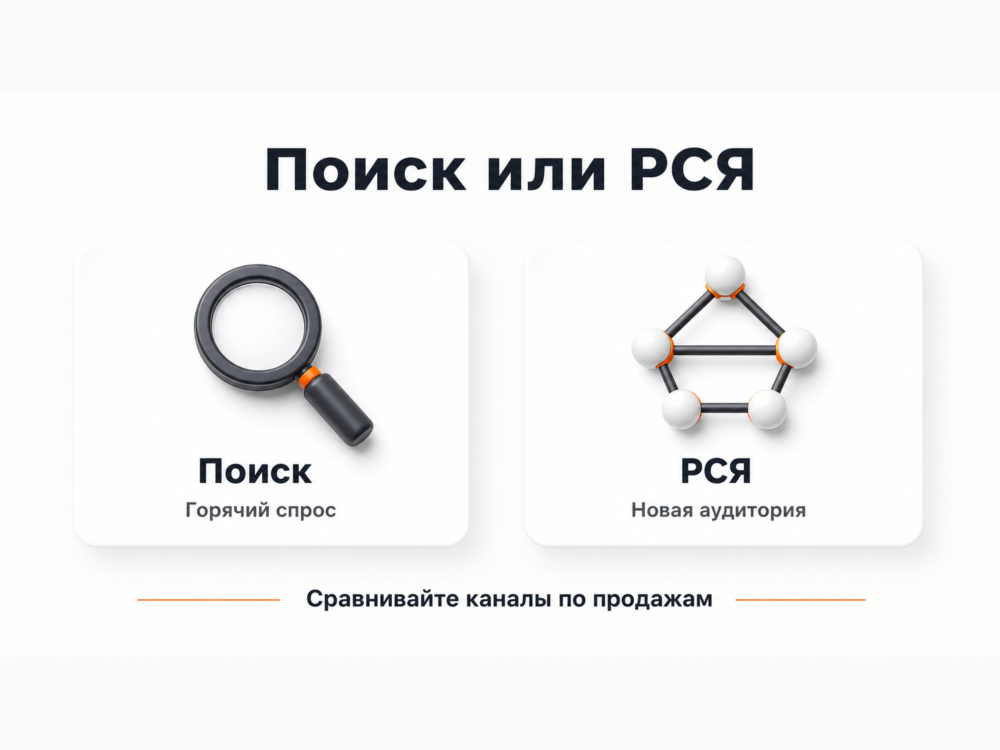
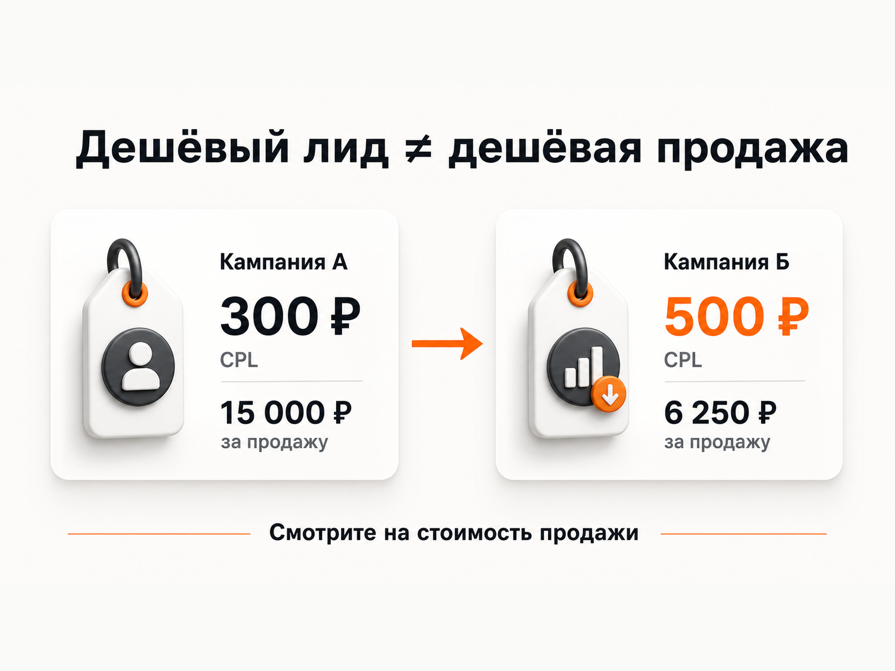

Блог о платном трафике
Контекстная реклама онлайн-школы: как получать заявки из Яндекс Директа
Контекстная реклама онлайн-школы работает лучше всего, когда Яндекс Директ получает понятную задачу: кого привлекать, на какое предложение вести человека и какое действие считать результатом.
Для образовательного проекта недостаточно получить дешевые клики или регистрации. Нужно связать рекламу с дальнейшей воронкой: бесплатным уроком, вебинаром, консультацией, Telegram-ботом или сразу продажей курса. После этого оценивать не только стоимость первого действия, но и качество аудитории, оплаты и экономику всей цепочки.
В Яндекс Директе сейчас можно отдельно управлять показами на Поиске и в Рекламной сети Яндекса через Единую перфоманс-кампанию. Для автоматической оптимизации используются цели Яндекс Метрики и конверсионные стратегии.
Чем реклама онлайн-школы отличается от обычной рекламы услуг
У онлайн-школы часто есть несколько этапов между первым переходом и оплатой:
реклама -> бесплатный материал -> прогрев -> консультация или вебинар -> продажа курса.
Из-за этого оценивать кампанию только по количеству заявок опасно. Два источника могут давать одинаковый CPL, но совершенно разный результат по продажам.
Например, одна кампания приводит 100 регистраций на бесплатный урок, после которых покупают 10 человек. Другая дает такие же 100 регистраций, но до оплаты доходят двое. Формально стоимость регистрации может быть одинаковой, фактическая ценность трафика - нет.
Поэтому перед запуском я сначала разбираюсь, какое действие действительно связано с деньгами. Иногда это заявка на консультацию. Иногда регистрация на вебинар. Иногда запуск Telegram-бота. Для недорогих массовых курсов можно оптимизироваться значительно ближе к покупке.

Поиск или РСЯ для онлайн-школы
Я бы не выбирал один источник заранее. Поиск и РСЯ решают разные задачи.
Поиск Яндекса
На Поиске человек уже сформулировал потребность. Например:
- курсы английского онлайн;
- обучение дизайну интерьера;
- курсы фотографии;
- подготовка к ЕГЭ онлайн;
- обучение новой профессии;
- курсы программирования для детей.
Это более сформированный спрос. Пользователь сам сообщает, что ему нужно, поэтому объявление можно максимально точно связать с его запросом.
При этом спрос на многие образовательные продукты ограничен. Особенно если школа работает в узкой теме. Масштабировать проект только поисковой рекламой получается не всегда.
Рекламная сеть Яндекса
В РСЯ алгоритмы могут находить аудиторию по интересам, поведению, тематике и другим сигналам. Объявления показываются за пределами обычной поисковой выдачи: на сервисах Яндекса, сайтах, в приложениях и других площадках.
Подробнее - в статье «Что такое РСЯ в Яндекс Директе».
Для онлайн-образования это особенно интересно, когда продукт можно показать большой холодной аудитории через понятный вход:
- бесплатный урок;
- мастер-класс;
- вебинар;
- мини-курс;
- тест;
- полезный материал;
- пробное занятие.
Здесь уже сильно влияют оффер, изображение, первый экран сайта и сама воронка.

Не дробить рекламу сильнее, чем нужно алгоритму
Старый подход к Яндекс Директу часто строился на огромном количестве небольших кампаний, детальной ручной сегментации и сотнях групп объявлений.
Сейчас такая структура может мешать автоматическим стратегиям, потому что статистика распределяется между большим количеством кампаний.
Это хорошо видно на моем кейсе масштабирования онлайн-фотошколы.
У школы уже работала воронка: бесплатный видеоурок, email-прогрев и продажа платных программ. Проблема появлялась при масштабировании. Когда бюджет рос, стоимость лида превышала 350 рублей.
Я пересобрал структуру: вместо десятков мелких кампаний сделал несколько крупных, объединил аудитории и сконцентрировал конверсии внутри кампаний. В результате за три месяца проект вышел на 1500-2500 лидов в месяц со средней стоимостью 126 рублей.
Смысл здесь не в том, что кампаний всегда должно быть мало. Структура нужна для управления рекламой. Но разделение должно иметь практическую причину: другой продукт, аудитория, география, экономика, посадочная страница или отдельная рекламная задача.
Какой оффер использовать в рекламе онлайн-школы
Сам курс далеко не всегда является лучшей точкой первого контакта.
Пользователь из холодной аудитории может быть не готов сразу покупать программу стоимостью в десятки тысяч рублей. В таком случае проще сначала получить более легкое действие.
Для разных школ работают разные варианты:
| Продукт | Возможный первый шаг |
|---|---|
| Профессиональное обучение | консультация, открытый урок, вебинар |
| Хобби-курсы | бесплатный урок, мастер-класс |
| Детское образование | пробное занятие, консультация родителя |
| Языковая школа | тест уровня, пробный урок |
| Экспертные программы | вебинар, мини-курс, разбор |
| Узкая новая тема | бесплатный вводный материал |
Сам бесплатный продукт при этом ничего не гарантирует. Он должен приводить аудиторию, которая потенциально способна купить основную программу.
В кейсе курса по лозоплетению трафик шел на бесплатный курс, после которого продавалась платная программа. За анализируемый месяц ROMI составил 271%, а конверсия из бесплатной регистрации в оплату - 9,39%. В этом случае бесплатный продукт был полноценной частью коммерческой воронки, а не способом собрать максимальное количество дешевых контактов.
Сайт должен продолжать обещание из объявления
В рекламе образования посадочная страница часто влияет на результат не меньше рекламного кабинета.
Если объявление обещает бесплатный урок по портретной фотографии, человек после клика должен сразу увидеть этот урок, программу, пользу и понятную форму регистрации.
Не стоит вести такую аудиторию на главную страницу школы, где одновременно продаются десять курсов.
На посадочной странице обычно должны быть:
- понятный заголовок;
- описание результата обучения;
- программа или содержание;
- информация о преподавателе;
- формат занятий;
- ответы на основные возражения;
- социальные доказательства, если они есть;
- понятное целевое действие.
Отдельно нужно следить за мобильной версией. Значительная часть пользователей может впервые знакомиться со школой с телефона, поэтому длинная тяжелая страница с неудобной формой способна испортить даже хороший рекламный трафик.
Подробнее - в статье «Что такое лендинг в Яндекс Директе».
Для узкого курса нужно переводить продукт на язык аудитории
Еще одна проблема образовательных проектов - реклама словами, которые хорошо понимает эксперт, но почти не использует потенциальный ученик.
Особенно это заметно в новых или узких направлениях.
В моем кейсе обучения Васту бесплатный мини-курс продвигался через Telegram-бота. Сам термин «Васту» был слишком узким сигналом для холодной аудитории.
Я изменил рекламные сообщения и сделал акцент на более понятных темах: пространстве, доме, дизайне и планировке. Одновременно настроил передачу запуска Telegram-бота в Метрику, чтобы реклама оптимизировалась под реальное действие.
За месяц получили 201 запуск бота по средней стоимости 203 рубля.
Та же логика работает с другими школами. Потенциальный ученик может искать не название вашей методики, а решение своей задачи.
Он хочет не «освоить авторскую систему обучения английскому», а начать разговаривать. Не «пройти программу профессиональной переподготовки», а получить новую профессию. Не «изучить академическую композицию», а научиться делать хорошие фотографии.
Какие цели передавать в Яндекс Директ
Алгоритму нужно явно показать, кого считать хорошим пользователем.
Яндекс позволяет использовать цели Метрики в конверсионных стратегиях. Чем ближе выбранное действие к реальному результату бизнеса, тем полезнее сигнал для оптимизации.
Для онлайн-школы можно отслеживать:
- отправку формы;
- регистрацию на бесплатный урок;
- запись на консультацию;
- звонок;
- запуск Telegram-бота;
- регистрацию на вебинар;
- оплату;
- квалифицированный лид из CRM.
Я бы не использовал просмотр страницы или клик по кнопке как основную цель, если можно передавать реальную регистрацию.
Если сайт онлайн-школы сделан на Tilda, отдельно проверьте корректность отправки форм.
Подробнее - в статье о целях Яндекс Метрики на Tilda.
Почему дешевый лид может оказаться дорогим
Одна из основных ошибок в EdTech - оптимизация ради минимального CPL.
Допустим, реклама А приносит регистрацию за 300 рублей, а реклама Б - за 500 рублей. На уровне рекламного кабинета первая кажется лучше.
Но дальше может оказаться:
| Показатель | Кампания А | Кампания Б |
|---|---|---|
| Регистрации | 100 | 100 |
| CPL | 300 ₽ | 500 ₽ |
| Расход | 30 000 ₽ | 50 000 ₽ |
| Продажи | 2 | 8 |
| Стоимость продажи | 15 000 ₽ | 6 250 ₽ |
У кампании Б лид почти в два раза дороже, но покупатель обходится значительно дешевле.
Поэтому контекстную рекламу онлайн-школы желательно анализировать минимум до квалифицированного обращения, а при возможности - до оплаты.
CPA и CPL здесь нужны как промежуточные показатели.
Подробнее - в статье «CPA в Яндекс Директе».

Нужно ли передавать данные из CRM
Если онлайн-школа получает достаточно обращений, связь рекламной системы с CRM становится особенно полезной.
Метрика видит, что человек отправил форму. Но без дополнительных данных она не знает, оказался ли лид целевым, пришел ли на вебинар и купил ли обучение.
По мере развития проекта можно разделять события:
регистрация -> квалифицированный лид -> участие -> продажа.
Это особенно важно, когда дешевый лид легко получить через широкий бесплатный оффер. Если алгоритм видит только регистрацию, он будет искать людей, которые хорошо регистрируются. Это не обязательно те же люди, которые хорошо покупают.
Как я запускаю рекламу новой онлайн-школы
Если статистики еще нет, я не пытаюсь сразу построить окончательную структуру.
Сначала нужно получить данные.
1. Проверяю продукт и воронку
Что продается, кому, какой первый шаг предлагается пользователю и сколько школа может платить за ученика.
2. Настраиваю аналитику
Метрика, реальные цели, формы, звонки, бот и другие ключевые события.
3. Готовлю несколько рекламных гипотез
Разные аудитории, офферы и креативы должны отличаться по смыслу, иначе фактически тестируется одно и то же объявление.
4. Запускаю Поиск и РСЯ там, где это оправдано
В актуальной Единой перфоманс-кампании Яндекс позволяет отдельно выбирать показы только на Поиске или только в РСЯ.
Подробнее - в статье «Как настроить рекламу в Яндекс Директ».
5. Собираю статистику
Смотрю не только клики и CTR, а реальные конверсии, их стоимость и качество.
6. Отключаю слабые связки и расширяю рабочие
После появления данных становится видно, где проблема: аудитория, объявление, посадочная страница, цена предложения или следующий этап воронки.
Что чаще всего мешает рекламе онлайн-школы
Слишком широкий бесплатный оффер
Регистрации дешевые, но продукт интересен людям, которые не собираются покупать обучение.
Оптимизация по слабой цели
Алгоритм ищет пользователей, которые открывают форму или страницу, хотя бизнесу нужны заявки.
Слабая посадочная страница
Объявление привлекает нужного человека, но сайт не объясняет программу, результат и причины выбрать школу.
Избыточное дробление кампаний
Конверсии распределяются между десятками небольших кампаний, каждой из которых не хватает данных.
Постоянное изменение настроек
Кампании не успевают накопить нормальную статистику, потому что стратегия, бюджет и аудитории меняются каждые несколько дней.
Оценка рекламы только по CPL
Отдел маркетинга радуется дешевым регистрациям, а отдел продаж получает аудиторию, которая не покупает.
Отсутствие связи рекламы с продажами
Директ, Метрика и CRM существуют отдельно друг от друга, поэтому невозможно понять, какие кампании действительно приносят деньги.
Сколько стоит контекстная реклама онлайн-школы
Единой стоимости клика или заявки для образовательных проектов нет.
На результат влияют:
- тематика обучения;
- конкуренция;
- география;
- сезонность;
- стоимость курса;
- тип воронки;
- конверсия посадочной страницы;
- качество рекламных материалов;
- выбранная цель оптимизации;
- накопленные данные.
Поэтому я не рассчитываю бюджет по принципу «столько обычно тратят онлайн-школы».
Сначала определяется допустимая стоимость привлечения ученика. Затем учитываются конверсии между этапами воронки и рассчитывается допустимая стоимость первого обращения.
Если школа зарабатывает на ученике меньше, чем тратит на его привлечение, дешевый клик эту проблему не решит.
Когда контекстную рекламу можно масштабировать
Увеличивать бюджет имеет смысл, когда понятна экономика текущей связки.
Нужно знать хотя бы:
- сколько стоит целевая регистрация;
- сколько регистраций становятся квалифицированными;
- сколько доходят до продажи;
- сколько стоит привлечение ученика;
- позволяет ли маржа увеличивать рекламные расходы.
После этого можно повышать объем и проверять, сохраняется ли экономика.
Кейс фотошколы хорошо показывает этот принцип: задача была не получить минимальный CPL на небольшом бюджете, а увеличить объем до 1500-2500 лидов в месяц без возврата к стоимости выше 350 рублей. После перестройки рекламной архитектуры средний CPL составил 126 рублей.
Контекстная реклама онлайн-школы должна работать вместе с воронкой
Яндекс Директ может привести человека, но он не исправит слабый продукт, непонятный оффер или неработающий отдел продаж.
Поэтому я рассматриваю рекламу образовательного проекта как единую систему:
аудитория -> объявление -> посадочная страница -> регистрация -> прогрев -> продажа.
Если на одном этапе большая потеря, увеличение рекламного бюджета просто быстрее направит туда больше людей.
Именно поэтому при работе с онлайн-школой я смотрю не только рекламный кабинет, но и страницу, цели, воронку и дальнейшее качество обращений.
Больше кейсов - на главной странице сайта.
FAQ
Подходит ли Яндекс Директ для онлайн-школ?
Да. Через Директ можно работать со сформированным спросом на Поиске и расширять охват через РСЯ. Эффективность зависит от продукта, воронки, посадочной страницы, аналитики и экономики привлечения ученика.
Что лучше рекламировать: платный курс или бесплатный вебинар?
Зависит от продукта. Для холодной аудитории часто проще начать с бесплатного урока, вебинара, теста или консультации. Но оценивать такой оффер нужно по дальнейшим продажам, а не только по цене регистрации.
Что лучше для онлайн-школы: Поиск или РСЯ?
Универсального ответа нет. Поиск работает со сформированным спросом, РСЯ позволяет получать дополнительный масштаб и работать с аудиторией за пределами поисковой выдачи. На практике решение принимается по результатам теста.
Нужно ли использовать автоматические стратегии?
Для кампаний с накопленными конверсиями конверсионные стратегии позволяют Яндекс Директу оптимизировать показы под выбранные целевые действия. Главная задача рекламодателя - передать системе корректную цель и контролировать фактическое качество результата.
По какой метрике оценивать рекламу онлайн-школы?
Минимум по стоимости целевой заявки и ее качеству. Если есть техническая возможность, лучше считать стоимость квалифицированного лида, ученика и окупаемость рекламной воронки.